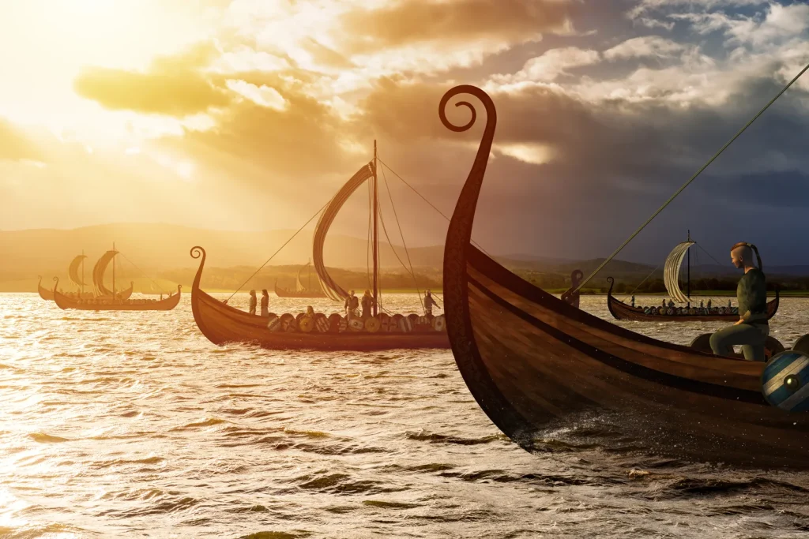

Vikingler Amerika’yı Keşfetti mi?
Amerika’yı Vikingler mi keşfetti? Bu, biraz açılım gerektiren bir soru. Öncelikle, Yeni Dünya ile karşılaşmaya gemilerdeki adamların bakış açısından bakan ve yerli halkın uzun zamandır burayı evi olarak gördüğü gerçeğini göz ardı eden, keşfetmek kelimesinin Avrupa merkezci bakış açısı sorunu var.
Bu anlamda Amerika muhtemelen Asya’dan gelen ve tarihçilerin son buzul çağında Sibirya’dan yaya olarak Bering Boğazı üzerinden bir kara köprüsüyle Alaska’ya ulaştıklarına ya da teknelerle gelip kıyı şeridi boyunca güneye doğru ilerlediklerine inandıkları avcılar tarafından keşfedilmiştir. Her iki durumda da, bu insanlar 13.000-35.000 yıl önce gelmişlerdir – o kadar uzun zaman önce ki, onların torunları kıtanın yerli halkları, Amerikan Yerlileri olarak kabul edilmektedir.

Soruyu yeniden sorarsak, Vikinglerin Amerika’yla karşılaşan ilk yerli olmayan Amerikalılar olup olmadığını sorabiliriz. Ancak bu sorunun cevabı Amerika ile neyi kastettiğimize bağlıdır. Eğer geniş anlamda Amerika’dan bahsediyorsak, yani Kuzey ve Güney Amerika’yı kastediyorsak, oraya ilk olarak Polinezyalıların gitmiş olma ihtimali vardır. Amerika’ya özgü olan tatlı patatesin genetik analizi, bilim insanlarının Polinezyalı kaşiflerin Güney Amerika ile erken bir karşılaşma yaşadıkları ve tatlı patatesi beraberlerinde Güneydoğu Asya ve Pasifik Adaları’na götürdükleri sonucuna varmalarına yol açmıştır. Bilim insanları bu alışverişin Kristof Kolomb zamanından önce gerçekleştiğine inanıyor, ancak Vikinglerin Kuzey Amerika ziyaretlerinden önce olup olmadığını bilmiyorlar.
Amerika’yla ilk karşılaşan Avrupalıların Vikingler olup olmadığı sorusu Vikingler-Columbus tartışmasına zemin hazırlar, ancak önce Aziz Brendan’ın efsanevi yolculuğunu hesaba katmak gerekir. Destansı “Başrahip Aziz Brendan’ın Yolculuğu “na göre (8. yüzyılın ortaları ile 10. yüzyılın başları arasında Latince düzyazı olarak Navigatio Sancti Brendani Abbatis adıyla kaydedilmiştir), 6. yüzyılda gezgin bir İrlandalı keşiş olan Brendan ve bazı kardeşleri, curragh (coracle) olarak bilinen kase şeklindeki bir tekneyle Atlantik Okyanusu’nun batısına doğru yola çıkmıştır. Brendan’ın Kuzey Amerika’ya ulaştığı iddia edilmiş ve modern bir deneyle curragh ile transatlantik geçişi yapmanın mümkün olduğu kanıtlanmıştır, ancak Kuzey Amerika’ya erken bir İrlanda ziyaretine dair arkeolojik bir kanıt yoktur.
Dolayısıyla iş yine Kolomb ve Vikinglere kalıyor. Tarih bize 1492 yılında, Asya’ya daha kısa bir rota arayışında olan İspanyol destekli üç gemilik bir filoya liderlik ederken, İtalyan denizci Kristof Kolomb’un Guanahani (muhtemelen San Salvador Adası, belki başka bir Bahama adası veya Turks ve Caicos Adaları) şeklinde Amerika’ya rastladığını söyler. İngiltere’ye yelken açan bir başka İtalyan denizci John Cabot da bu sıralarda Kanada’ya ulaştı, ancak bu Kolomb’dan sonra, 1497’ye kadar gerçekleşmedi. Sonuç olarak, Kolomb neredeyse evrensel olarak Amerika’nın “kaşifi” ilan edildi.
Ancak bu iddianın karşısında, bir çift ortaçağ İskandinav destanında (kahramanlık düzyazı şiirleri) yer alan Vinland adlı bir yere yapılan Viking yolculuklarının anlatıları duruyordu. Grænlendinga destanına (“Grönlandlıların Destanı”) göre, Bjarni Herjólfsson, Grönland’a giden gemisi 985 civarında rotasından batıya doğru savrulduğunda Kuzey Amerika anakarasını gören ilk Avrupalı oldu. Ayrıca, 1000 yılı civarında Kızıl Erik’in oğlu Leif Eriksson’un Bjarni’nin gördüğü toprakları aramak için bir keşif gezisi düzenlediği ve sonunda güneye gidip Vinland’ı (“Şarap Ülkesi”) bulmadan önce Helluland (“Düz Kayalar Ülkesi”) adını verdiği buzlu çorak bir arazi bulduğu bildirilmektedir. Daha sonra, Leif’in kardeşleri tarafından gerçekleştirilen bir çift keşif gezisinin ardından, İzlandalı bir tüccar olan Thorfinn Karlsefni, üç yıl boyunca kaldığı Vinland’a başka bir keşif gezisi düzenledi. Eiríks saga rauða’da (“Kızıl Erik’in Destanı”) Leif, Vinland’ın tesadüfen keşfeden kişidir ve Thorfinn ile karısı Gudrid, sonraki tüm keşiflerle anılır.
Maine, Rhode Island ya da Atlantik Kanada’ya benzeyen bir yerin keşfine ilişkin bu anlatıların, 1960 yılında Norveçli kaşif Helge Ingstad ve eşi arkeolog Anne Stine Ingstad, yerel bir adam tarafından Newfoundland adasının kuzey ucundaki bir bölgeye götürülene kadar “Başrahip Aziz Brendan’ın Yolculuğu” gibi hikayelerden ibaret olduğu düşünülüyordu. Orada, L’Anse aux Meadows’da, 1000 yılına tarihleyebildikleri bir Viking kampının kalıntılarını keşfettiler. Bu çarpıcı arkeolojik keşifler sadece Vikinglerin Kolomb’un gelişinden yaklaşık 500 yıl önce Amerika’yı gerçekten keşfettiklerini değil, aynı zamanda daha güneyde üzüm yetişen bölgelere, Vinland’a seyahat ettiklerini de kanıtladı. Vikingler gerçekten de Kuzey Amerika’yı ziyaret etmişlerdi ve Amerika’yı kelimenin tam anlamıyla “keşfetmemişlerse” bile, kesinlikle Kolomb’dan önce oraya varmışlardı.